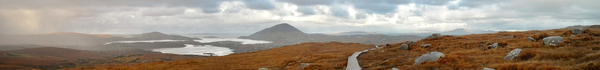
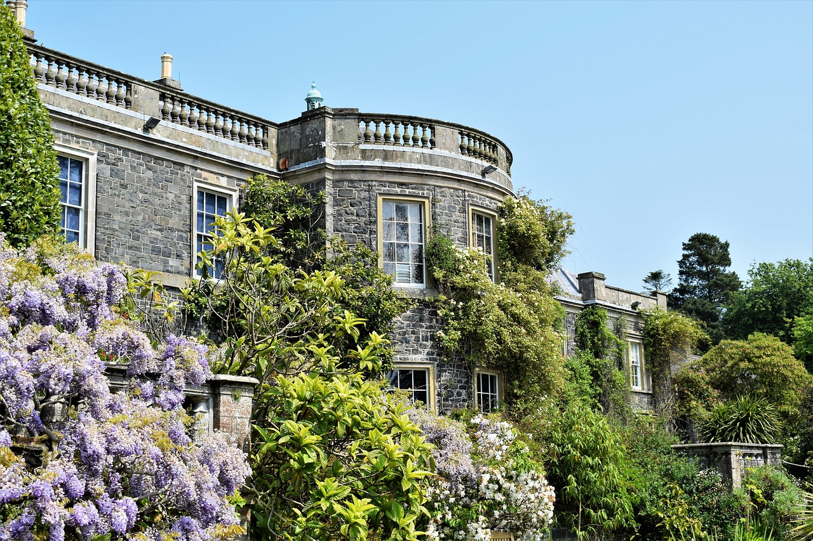
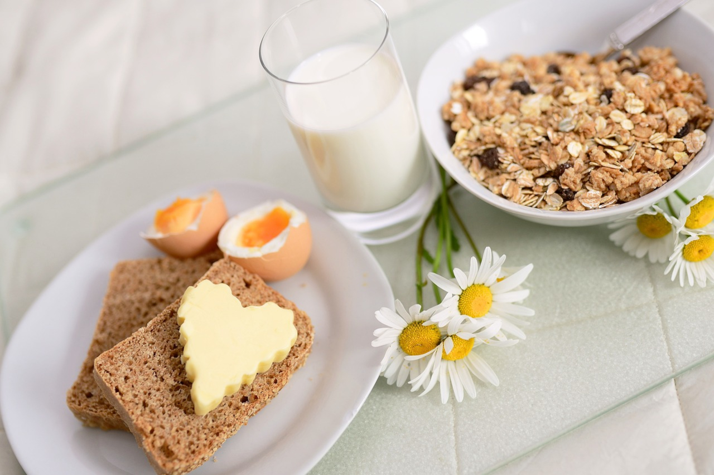
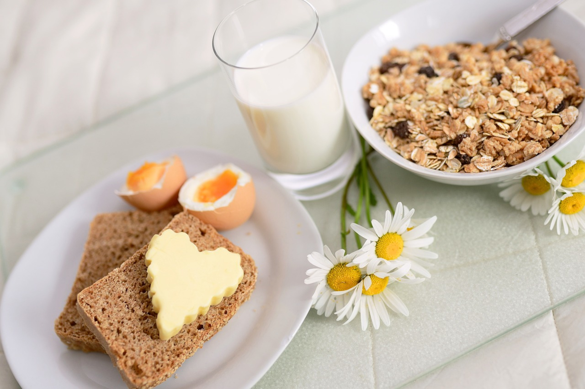
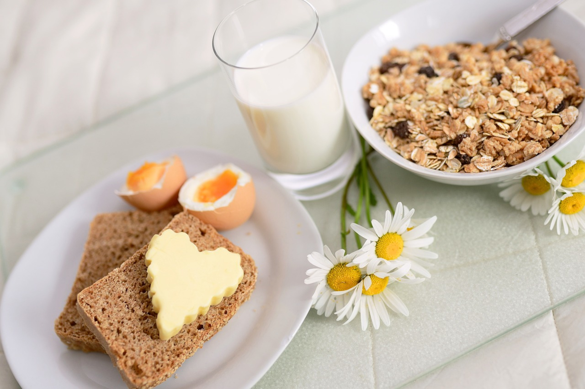

TripAdvisor Certificate of Excellence
2018 and 2019

All rooms in the B&B offer the following to its guests: luxuriously furnished, non-smoking, own private bathrooms with full size baths, separate walk-in tropical rain showers, walnut wooden floors, central heating, iron and ironing board, hair dryer, all with 32" to 40" flat T.V. and tea/coffee making facilities. Full breakfast, free 24 hour wireless broadband Internet access throughout, free private off street car park and all taxes are included in rate.
The regular check-in times are daily from 11:00am - 5:30pm. Please make the B&B aware if you plan to arrive outside of these hours to arrange. Breakfast is served from 8am weekdays and 7.30am weekend.
The regular check-in times are daily from 11:00am - 5:30pm. Please make the B&B aware if you plan to arrive outside of these hours to arrange. Breakfast is served from 8am weekdays and 7.30am weekend.


 

